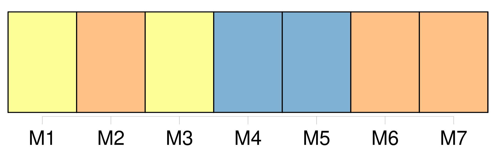
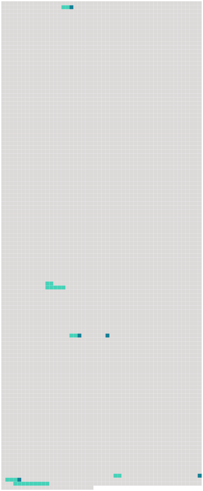

Longueur nb maillons : 12 mentions |
  |
Des nids d'hirondelles oblitéraient le faîte des cheminées et les angles des fenêtres, et, sans un mince filet de fumée qui sortait d'un tuyau de briques et se tortillait en vrille comme dans ces dessins de maisons que les écoliers griffonnent sur la marge de leurs livres de classe, on aurait pu croire le logis inhabité : maigre devait être [la cuisine] [qui] se préparait à ce foyer, car un soudard avec sa pipe eût produit des flocons plus épais. [80 phrases]
Sans la précaution du couvercle il eût plu dans la marmite, et l'orage eût allongé [le bouillon]
L'eau lentement échauffée avait fini par se mettre à gronder, et le coquemar râlait dans le silence comme une personne asthmatique : quelques feuilles de chou, débordant avec l'écume, indiquaient que la portion cultivée du jardin avait été prise à contribution pour [ce brouet plus que spartiate] [9 phrases]
» [43 phrases] Celui -ci détacha la marmite de la crémaillère, en versa [le contenu] sur son pain taillé d'avance dans une écuelle de terre commune qu'il posa devant le Baron ; [c'] était [ce potage vulgaire] [qu'] on mange encore en Gascogne, sous le nom de garbure ; puis il tira de l'armoire un bloc de miasson tremblant sur une serviette saupoudrée de farine de maïs et l'apporta sur la table avec la planchette qui la soutenait. Ce mets local avec [la garbure graissée par un morceau de lard dérobé] , sans doute, à l'appât d'une souricière, vu son exiguïté, formait le frugal repas du Baron, qui mangeait d'un air distrait entre Miraut et Béelzébuth, tous deux en extase et le museau en l'air de chaque côté de sa chaise, attendant qu'il tombât sur eux quelques miettes du festin. |
 |
La ressource peut être téléchargée sur la page Ortolang
Si vous avez des questions ou vous voyez des erreurs, merci d'envoyer un mail à silvia.federzoni89@gmail.com
Site développé par S. Federzoni (contact)